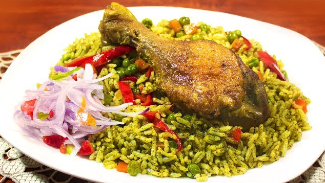

Preparacion de Arroz con Pato
Ingredientes del arroz con pato
- 4 piernas de pato
- 1/2 taza de aceite
- 1 taza de cebolla picada
- 3 dientes de ajos picados
- 3 cucharadas de ají amarillo molido
- 1 taza de culantro molido
- 1/2 taza de pisco
- 4 tazas de caldo de pato
- 1 taza de cerveza
- 3/4 tazas de arvejas
- 1/2 taza de zanahoria en cuadrados
- 2 pimientos rojos
- 1 ají amarillo en tiras
- 3 tazas de arroz
- Sal y pimienta
Preparación del arroz con pato
-
Sazonar el pato con sal y pimienta. Freír en aceite durante siete minutos. Retirar una vez dorado.
En
el mismo aceite dorar la cebolla, el ajo, el ají amarillo molido, el culantro y cocine unos minutos.
Verter el pisco, el caldo y la cerveza
-
Incorporar el pato y cocinar 35 minutos, retirar. Añadir la alverja, la zanahoria, un pimiento
picado, el ají amarillo en tiras y el arroz.
-
Una vez roto el hervor, bajar el fuego y cocinar de 15 a 20 minutos. Servir el arroz con las presas
de pato, adorne con el pimiento restante cortado en tiras.
